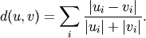

scipy.spatial.distance.canberra¶
- scipy.spatial.distance.canberra(u, v)¶
Computes the Canberra distance between two n-vectors u and v, which is defined as

Parameters : u : ndarray
An
 -dimensional vector.
-dimensional vector.v : ndarray
An
-dimensional vector.Returns : d : double
The Canberra distance between vectors u and v.
Notes
When u[i] and v[i] are 0 for given i, then the fraction 0/0 = 0 is used in the calculation.

Previous topic
scipy.spatial.distance.braycurtis
Next topic
scipy.spatial.distance.chebyshev